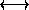

| Palindroms  smordnilaP |
The following problem deals with Palindroms composed of digits. A number is a palindrom, if the sequence of signs (digits or characters) read from left to right and read from right to left are identical. Now, given the number 65 with base 10, adding the number read from right to left , that means 56, leads to 121. By definition 121 is a palindrom. With another number you might have to repeat this step until the sum is of the required palindrom form. eg. 87:
87 + 78 = 165
165 + 561 = 726
726 + 627 = 1353
1353 + 3531 = 4884
The number of steps is 4.
This works in any base with any number. Naturally the number of steps increases incredibly fast, so there exist numbers in base 10 that requires more than 10,000 steps. You will have to find the numbers of steps of a given number in all the bases 15 down to 2. When a Number is in an illegal form in a base, the number of Steps will be represented by a ``?".
Base 15 87 + 78 = 110 110 + 011 = 121 2 steps Base 14 87 + 78 = 111 1 step Base 13 87 + 78 = 132 132 + 231 = 363 2 steps Base 12 87 + 78 = 143 143 + 341 = 484 2 steps Base 11 87 + 78 = 154 154 + 451 = 5A5 2 steps Base 10 87 + 78 = 165 165 + 561 = 726 726 + 627 = 1353 1353 + 3531 = 4884 4 steps Base 9 87 + 78 = 176 176 + 671 = 857 857 + 758 = 1726 1762 + 2671 = 7543 7543 + 3457 = 12111 12111 + 11121 = 23232 6 steps Base 8 illegal ? steps Base 7 illegal ? steps Base 6 illegal ? steps Base 5 illegal ? steps Base 4 illegal ? steps Base 3 illegal ? steps Base 2 illegal ? steps
The input contains several lines, each of them having a legal base 15 integer.
For each line of the input print a single line containing the 14 number of steps in all bases 15 down to 2 separated by a blank space. The number of steps will never be bigger than 100.
87 ED
2 1 2 2 2 4 6 ? ? ? ? ? ? ? 19 ? ? ? ? ? ? ? ? ? ? ? ? ?